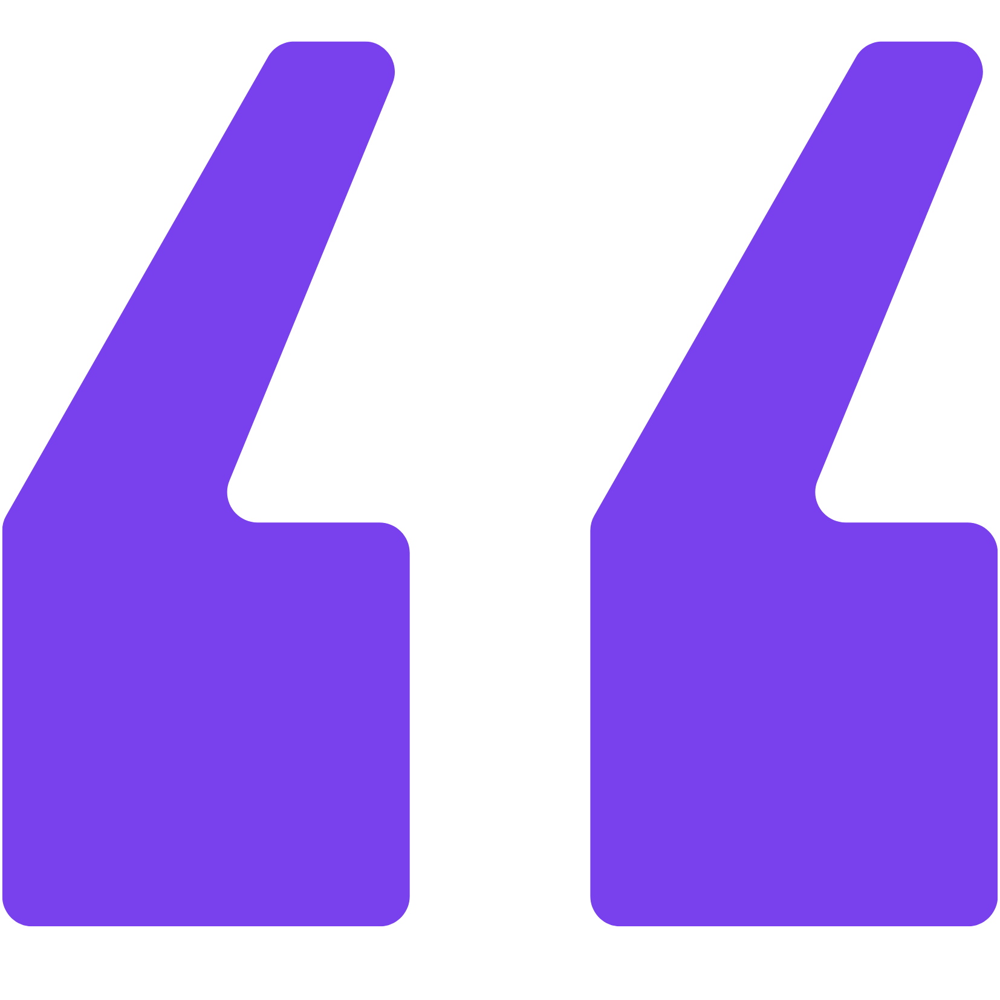

Bienvenue
sur mon portfolio
je suis Eva Tharrats
Développeuse web full-stack
Apprenante chez Ada Tech School
En recherche d’alternance

Après plus de 30 ans d'expérience professionnelle en tant
qu'assistante et assistante de direction trilingue, mon
attrait pour l’informatique et la technologie et l'envie
d'apprendre m’ont guidée vers une
reconversion professionnelle dans le développement
web.
Forte d'un premier titre de
Concepteur Intégrateur Web (IFOCOP) et de 8
mois de formation intensive chez ADA TECH SCHOOL, je maîtrise
aujourd'hui les bases de la conception d'applications. Ma
double compétence est ma force.
Pour clore ce parcours et obtenir mon titre de
Concepteur Développeur d'Applications, je
recherche une
alternance de 12 mois en contrat de
professionnalisation
(rythme : 4 jours en entreprise / 1 jour en formation).
Portfolio
Accéder au PortfolioMon CV
Télécharger le CV
Me contacter par email :
tharratseva@gmail.com